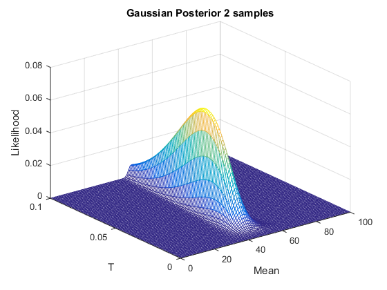

Contents
Binomial
p = 0.3;
pd = makedist('Binomial','p', p);
N1 = 1000;
N2 = 100;
X2 = 0:0.01:1;
a = 10;
b = 4;
prior = betapdf(X2,a,b);
figure;
plot(prior);
title('Binomial Prior (Bad Guess)');
xlabel('Mean');
ylabel('Likelihood');
a = 5;
b = 7;
prior = betapdf(X2,a,b);
figure;
plot(prior);
title('Binomial Prior (Good Guess)');
xlabel('Mean');
ylabel('Likelihood');
SET = [1,2,10,50];
X1 = 0:100;
mean_ml_sum = zeros(1,N2);
mean_cp_sum = zeros(1,N2);
for i = 1:N1
r = random(pd, 1, N2);
for n = 1:N2
numones = sum(r(1:n));
mean_ml = mean(r(1:n));
a_ = a + r(n);
b_ = b + 1-r(n);
prior = betapdf(X2,a_,b_);
mean_cp = (numones+a)/(n+a+b);
mean_ml_sum(n) = mean_ml_sum(n) + (mean_ml-p).^2;
mean_cp_sum(n) = mean_cp_sum(n) + (mean_cp-p).^2;
if i == 1
if any(SET == n)
likelihood = binopdf(X1,100,mean_cp);
posterior = prior .* likelihood;
figure;
plot(posterior);
title(strcat({'Binomial Posterior '}, num2str(n), ...
{' samples'}));
xlabel('Mean');
ylabel('Likelihood');
end
end
end
end
X2 = 0:0.01:1;
likelihood = binopdf(X1,100,p);
posterior = prior .* likelihood;
figure;
plot(posterior);
title('Binomial Final Posterior');
xlabel('Mean');
ylabel('Likelihood');
mean_ml = mean_ml_sum ./ N2;
mean_cp = mean_cp_sum ./ N2;
figure;
semilogy(mean_ml);
title('Binomal Mean ML Error');
xlabel('Number Samples');
ylabel('Error');
figure;
semilogy(mean_cp);
title('Binomial Mean CP Error');
xlabel('Number Samples');
ylabel('Error');
Gaussian
mu = 50;
sigma = 5;
pd = makedist('Normal', 'mu', mu, 'sigma', sigma);
N1 = 1000;
N2 = 100;
[X1, T] = meshgrid(0:100, 0:0.001:0.1);
mu0 = 80;
v = 10;
alpha = 15;
beta = 2000;
prior = (beta.^alpha).*sqrt(v)./(gamma(alpha).*sqrt(2.*pi)).* ...
T.^(alpha-0.5).*exp(-beta.*T).*exp(-v*T.*((X1-mu0).^2)./2);
figure;
mesh(X1,T,prior);
title('Gaussian Prior (Bad Guess)');
xlabel('Mean');
ylabel('T');
zlabel('Likelihood');
mu0 = 47;
v = 2;
alpha = 4;
beta = 100;
prior = (beta.^alpha).*sqrt(v)./(gamma(alpha).*sqrt(2.*pi)).* ...
T.^(alpha-0.5).*exp(-beta.*T).*exp(-v*T.*((X1-mu0).^2)./2);
figure;
mesh(X1,T,prior);
title('Gaussian Prior (Good Guess)');
xlabel('Mean');
ylabel('T');
zlabel('Likelihood');
SET = [1,2,10,50];
mean_ml_sum = zeros(1,N2);
mean_cp_sum = zeros(1,N2);
for i = 1:N1
r = random(pd, 1, N2);
for n = 1:N2
numones = sum(r(1:n));
mean_ml = mean(r(1:n));
v_ = v + n;
mu0_ = (v*mu0 + n*mean_ml)/(v + n);
alpha_ = alpha + n/2;
beta_ = beta + 1/2*sum((r(1:n)-mean_ml).^2) + ...
n*v/(n+v)*(mean_ml-mu0).^2/2;
mean_ml_sum(n) = mean_ml_sum(n) + (mean_ml-mu).^2;
mean_cp_sum(n) = mean_cp_sum(n) + (mu0_-mu).^2;
if i == 1
if any(SET == n)
likelihood = normpdf(0:100,mu0_,beta_/alpha_);
prior = (beta_.^alpha_).*sqrt(v_)./(gamma(alpha_).* ...
sqrt(2.*pi)).*T.^(alpha_-0.5).*exp(-beta_.*T).* ...
exp(-v_*T.*((X1-mu0_).^2)./2);
posterior = prior .* likelihood(ones(1,101),:);
figure;
mesh(X1,T,posterior);
title(strcat({'Gaussian Posterior '}, num2str(n), ...
{' samples'}));
xlabel('Mean');
ylabel('T');
zlabel('Likelihood');
end
end
end
end
mean_ml = mean_ml_sum ./ N1;
mean_cp = mean_cp_sum ./ N1;
likelihood = normpdf(0:100,mu0_,beta_/alpha_);
prior = (beta_.^alpha_).*sqrt(v_)./(gamma(alpha_).* ...
sqrt(2.*pi)).*T.^(alpha_-0.5).*exp(-beta_.*T).* ...
exp(-v_*T.*((X1-mu0_).^2)./2);
posterior = prior .* likelihood(ones(1,101),:);
figure;
mesh(X1,T,posterior);
title(strcat('Gaussian Final Posterior'));
xlabel('Mean');
ylabel('T');
zlabel('Likelihood');
figure;
semilogy(mean_ml);
title('Gaussian Mean ML Error');
xlabel('Number Samples');
ylabel('Error');
figure;
semilogy(mean_cp);
title('Gaussian Mean CP Error');
xlabel('Number Samples');
ylabel('Error');
